MS Office 365 Optimize
Overview@
We will guide users how to deploy a NF Gateway to optimize the connectivity to Microsoft O365 Services. The services that will be optimized are share-point and one-drive
Microsoft deployed content delivery network (CDN), where they offer many entry points around the World to access Office 365 Services like sharepoint, onedrive, etc. By providing these "front doors" (also known as) to O365 services, MS wanted to improve user experience by optimizing reach-ability and access. With that in mind, Microsoft is pushing Enterprises to utilize this CDN by creating O365 bypass at the edge of the Enterprise Network. The bypass is a configuration change, where a policy routing is enforced to allow the 0365 services to be short circuited to the Internet. The idea is to avoid going through a central location, where all content is inspected and checked for security threats before released to World Wide Web.
NetFoundry Edge has the ability to provide such bypass if desired, but in this Quickstart we are showing how our customers can configure NF Network to complement the MS CDN, utilize their optimization and still keep using NF Secure tunnels for connectivity.
Find the Closest Front Door@
Microsoft created an online tool to test from user's location, where the best entry to their Network is. Please open a browser on your windows computer and type the following url https://connectivity.office.com/.
As it is stated there, click on the location icon. Once the test is finished, it will show where the closest location is.


In our example, the user's closest location is Ashburn, VA (Azure USEAST).
Select Region
Make sure you replace "Your Region" with the location of Azure DC given by the location tool.
Most of the time, our Orchestration Platform will optimize the network to provide direct connectivity from where you are and Azure GW you are about to create. We will test if that is the case. We continuously update our optimization algorithm to pick the best path all the time based on ongoing data collection and feedback from the network fabric.
Through NF Web Console UI@
Create and Deploy NF Azure Gateway@
This section will guide a user through the steps on how to create a NF Manage Gateway in the NF Console UI and install it in the Azure vNet.
Console UI
- Navigate to Manage Gateways Page
- Click on + sign in the top right corner. 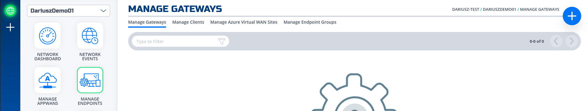
- Click on "Create Gateway" on the Azure Cloud Gateway Card 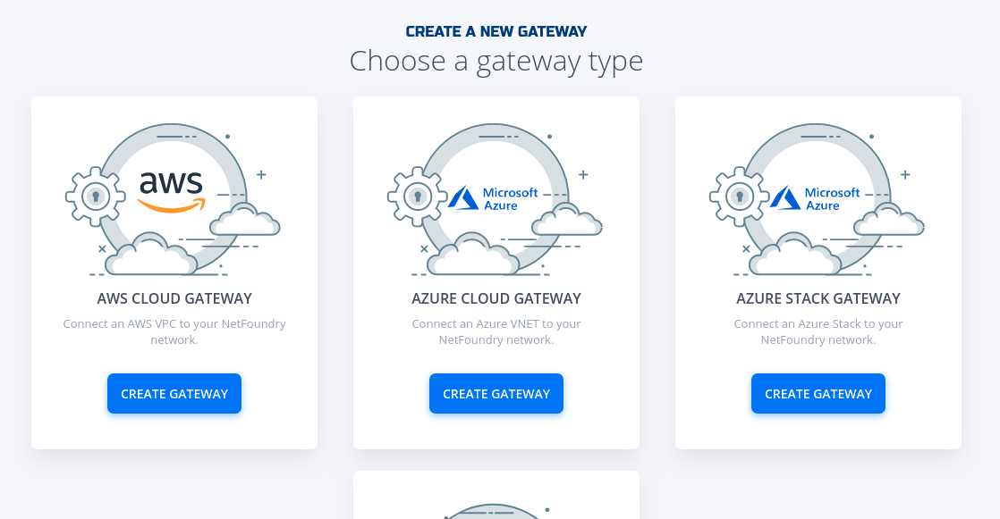
- Fill in the required information and click on "Create" 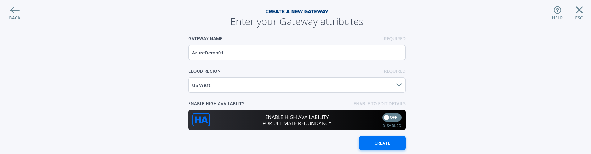
- Copy the Client Registration Key 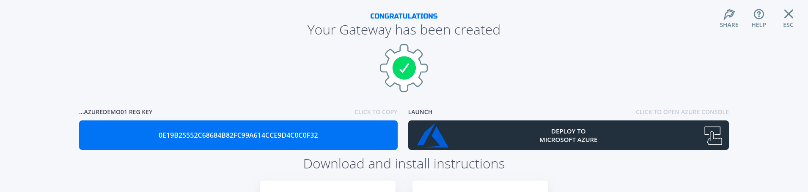
- Click on "Deploy to Microsoft Azure". It will take you to the Azure Portal and ask you for your login credentials.
- You will be presented with the template that needs to be filled. The first section is the Basics regarding your Subscription and Resource Group this gateway will be deployed in.

- The second section related to resources associated with this gateway. e.g. vm name, ip address space, security groups, etc. you will paste the registration key copied in step 5. You will also need the public ssh key to use for access to this gateway remotely. 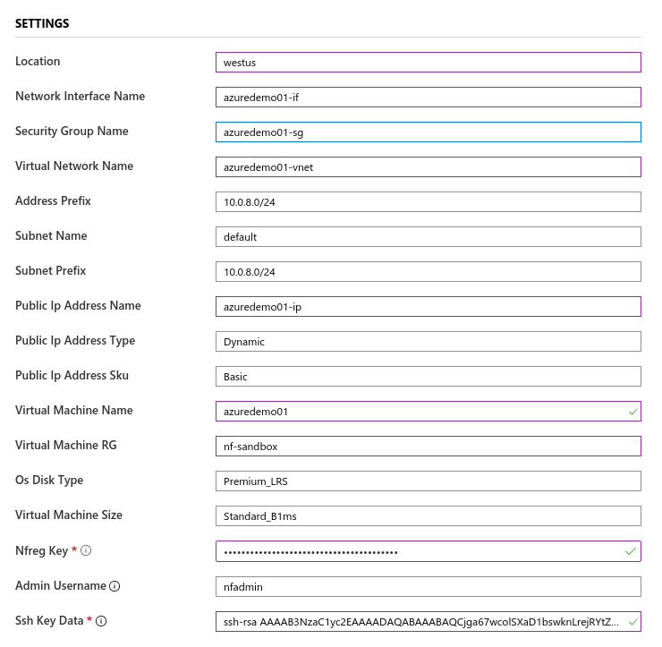
- You will need to agree to Azure Marketplace Terms and Conditions and click to "Purchase" to continue.

- If the NF Gateway was deployed successfully. Here is the view of the Resource Group and NF Conole UI. 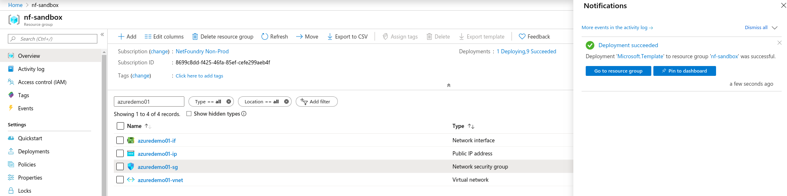 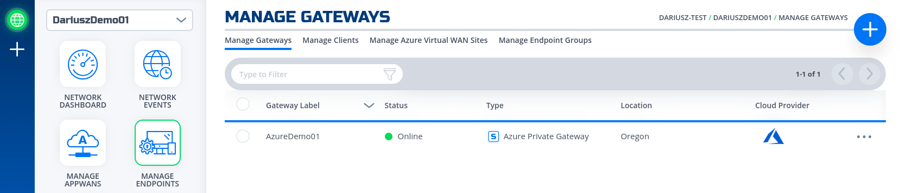
- Done
Create SharePoint & OneDrive Services
Once can find the ip address that are allocated by Microsoft for SharePoint and OneDrive service. Click on this link and write them down
We only required to use "Optimize Required" (ID 31), and they are 13.107.136.0/22, 40.108.128.0/17, 52.104.0.0/14, 104.146.128.0/17, 150.171.40.0/22. Create 5 services by repeating the next section for each of them. Replace Network Address in Step 4 with the ones above and Intercept Ports with 80, 443.
Create IP Network Service@
This section will guide a user through the steps on how to create a NF Service.
Console UI
- Navigate to Manage Services Page under Manage Appwans
- Click on + sign in the top right corner.

- Click on "Create an IP Network Service" 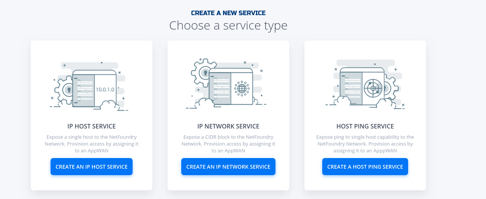
-
Fill in the required information for the Network your wanting to access.

Important
Please make sure the service you want to access is behind the gateway you specify here.
-
If successfully, the service is green. 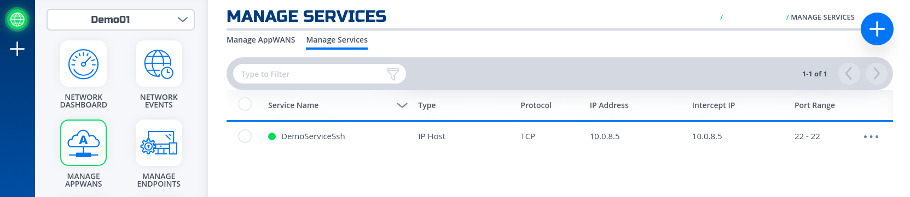
- Done
All services configured.

Create AppWan@
This section will guide a user through the steps on how to enable service connectivity to users by creating an appwan.
Console UI
- Navigate to Manage AppWANS Page under Manage Appwans
- Click on + sign in the top right corner.

- Click on "Component Builder Appwan"

- Move the desired gateway (e.g. DemoGateway01) from "Available" Gateways to "Selected" Endpoints. Move the desired service (e.g. DemoServiceSsh) from "Available" to "Selected" Services. 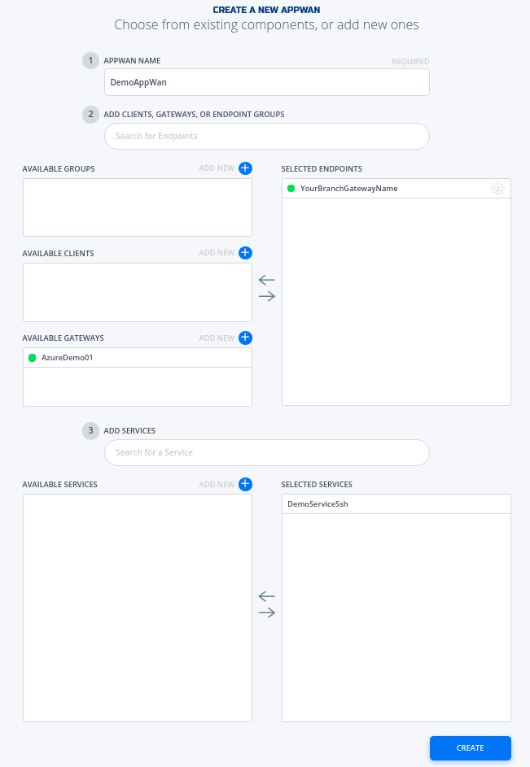
- Click on "Create". 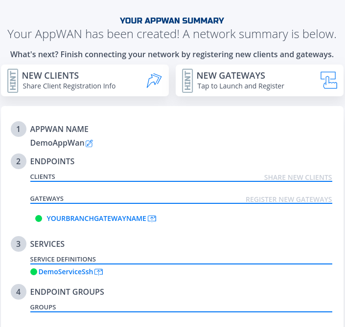
- Done
AppWan successfully configured would look like this.

Create and install NF Client@
This section will guide a user through the steps on how to create a client in the NF Console UI. Then, it will provide links to Guides on how to install the NetFoundry Client Software for Windows and MAC Clients, including the registration with the NF Network Fabric.
Console UI
- Navigate to Manage Clients Page

- Click on + sign in the top right corner.
- Fill in the required information and click on "Create"

- Copy the Client Registration Key 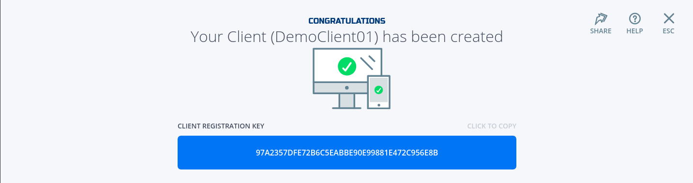
- Install the NF Client Software by following the directions at the appropriate OS link
- Add this Endpoint to the AppWan
- Once endpoint is added to the AppWan, here is what the services tab should look like.

Programmatically@
Create via Python and Terraform@
Python Modules
For the code clarity, we have broken down the code into multiple Python modules
Environment Setup Requirements
-
~/.env to store NF Credentials in (e.g.
clientId, clientSecret) to obtain a session token for NF API -
Export Azure Credentials (e.g,
export ARM_TENANT_ID, ARM_CLIENT_ID, ARM_CLIENT_SECRET, ARM_SUBSCRIPTION_ID) to enable resource gateway creation in Azure Resource Group via Terraform. - Terraform and Python3 installed in path.
Additional Information:
- The new Resource Group in Azure is created based on then name provided in Resource yml, if one does not exist already in the same region (e.g. centralus). The action delete gateway will delete the RG as well even if it was an existing RG. If one does not want to delete the RG, the command
terraform state rm "{tf resource name for RG}"needs to be run before running the gateway delete step. This will ensure that the RG is not deleted. - A new vNet will be created and NF Gateway will be placed in it.
- Environment means the NF Console Environment used (e.g. production), not Azure.
Steps
- Clone this repo (git clone https://github.com/netfoundry/mop.git)
- Change directory to mop:
cd mop - Update
quickstarts/docs/api/python/etc/nf_resources.ymlas so:environment: production network_action: create network_name: NetworkO365 gateway_list: - action: create cloud: azure count: 1 names: - GATEWAY-O365-01 region: "region found by the connectivity test, e.g. eastus" regionalCidr: - 10.20.10.0/24 regkeys: [] resourceGroup: name: "you resource RG Name" region: "region of your RG" tag: null services: - action: create gateway: GATEWAY-O365-01 name: SharePointOneDrive01 netCidr: 22 netIp: 13.107.136.0 type: network - action: create gateway: GATEWAY-O365-01 name: SharePointOneDrive02 netCidr: 17 netIp: 40.108.128.0 type: network - action: create gateway: GATEWAY-O365-01 name: SharePointOneDrive03 netCidr: 14 netIp: 52.104.0.0 type: network - action: create gateway: GATEWAY-O365-01 name: SharePointOneDrive04 netCidr: 17 netIp: 104.146.128.0 type: network - action: create gateway: GATEWAY-O365-01 name: SharePointOneDrive05 netCidr: 22 netIp: 150.171.40.0 type: network appwans: - action: create endpoints: [] name: AppWanSharepoint services: - SharePointOneDrive01 - SharePointOneDrive02 - SharePointOneDrive03 - SharePointOneDrive04 - SharePointOneDrive05 terraform: bin: terraform output: 'no' source: ./quickstarts/docs/terraform work_dir: . - Run this from the root folder (mop) to create network, gateway, services, and appwan throuhg NF API
and deploy Virtual Machine to host NF Gateway in your Azure RG.
python3 quickstarts/docs/api/python/source/netfoundry/nf_resources.py --file quickstarts/docs/api/python/etc/nf_resources.yml - Run this command if to keep RG (replace "RG Region" with your RG's region, e.g. centralus)
terraform state rm module."RG Region"_rg.azurerm_resource_group.terraformgroup - Once the script is finished, all the resources in NF Console and Azure RG will have been deployed.
Note
If something went wrong, please check logoutput.txt file generated in the root directory for details on any errors that may have occurred during the deployment.
Create Windows Client via Powershell@
This section provides the powershell code to spin up a NF client with the name as computer name fetched by PS script.
Example
- Here are the parameters used in the script few needs to be changed to suit your need for eg. network_name and region_ name.
clientId /secret: from NF console steps below. environment: Production network_name: e.g. DemoNet01 audience: URI for the Auth0 api_endpoint: URI for the API calls region_name: The region_name is the reference region or location where client will be created (reference closest AWS location) e.g.us-east-1 provider: AWS - To create a unique client we can use second half of computer name below powershell cmdlet will fetch the same.
#Set Endpoint name to second half of computer name: $endpoint_name = $ENV:COMPUTERNAME.Split("-")[-1] - This section creates an access token by an api call using parameters defined earlier.
# Get a auth token from Auth0 $auth_payload = @{ client_id=$client_id client_secret=$client_secret audience=$audience grant_type='client_credentials' } $auth_json = $auth_payload | ConvertTo-Json $post_uri = "https://netfoundry-" + $environment + ".auth0.com/oauth/token" $auth0_response = Invoke-RestMethod -Method Post -Uri $post_uri -ContentType 'application/json' -Body $auth_json $token = $auth0_response.access_token #Inserting auth token to headers for API calls $headers = New-Object "System.Collections.Generic.Dictionary[[String],[String]]" $headers.add("Authorization", ("Bearer " + $token)) - This is how to get datacenterId and networkId which basically makes an API call to strips off unwanted information.
This information will be used to create client later.
# Get a dataCenter ID: $datacenter_uri = $api_endpoint + "/dataCenters" $dataCenter_response = Invoke-RestMethod -Method Get -Uri $datacenter_uri -ContentType 'application/json' -Headers $headers $dataCenter = $dataCenter_response._embedded.dataCenters | where { $_.locationCode -like $region_name -and $_.provider -like $provider } | select _links $dataCenterId = ($dataCenter._links.self.href).Split("/")[-1]# Get a Network ID: $network_uri = $api_endpoint + "/networks" $network_response = Invoke-RestMethod -Method Get -Uri $network_uri -ContentType 'application/json' -Headers $headers $network = $network_response._embedded.networks | where { $_.name -like $network_name } | select _links $networkrId = ($network._links.self.href).Split("/")[-1] - Below section of the script uses computername, networkId and datacenterId from above sections to make API call create a NF client and fetch the regitration key.
# Create an Endpoint & get reg key $endpoint_uri = $api_endpoint + "/networks/" + $networkrId + "/endpoints" $endpoint_payload = @{ name = $endpoint_name endpointType = "CL" dataCenterId = $dataCenterId } $endpoint_json = $endpoint_payload | ConvertTo-Json $endpoint_response = Invoke-RestMethod -Method Post -Uri $endpoint_uri -ContentType 'application/json' -Body $endpoint_json -Headers $headers $endpoint_registration_key = $endpoint_response.registrationKey - This section will run a registration script silently to register the NF client.
# Run registration script Start-Process -FilePath C:\"Program Files"\DVN\vtc_app\nfnreg $endpoint_registration_key - Once you download PS script onto your laptop and update it with your network details, run the following in the directory containing the script:
.\NF-pwrshell.ps1 - Update the following section of the resources.yaml file referenced at the beginning of the last section.
appwans: - action: create endpoints: - "your endpoint name" - Run resources.py script to add the newly created endpoint to the same AppWan.
python3 quickstarts/docs/api/python/source/netfoundry/nf_resources.py --file quickstarts/docs/api/python/etc/nf_resources.yml - Once endpoint is added to the AppWan, here is what the services tab should look like.
Performance Testing@
Verifying the performance through testing
Note
Recommended way of accessing Ondrive is through the Windows App with File Explorer. If access to OneDrive is required using a browser than Firefox is recommended by NetFoundry to get best performance.
- Map your Business OneDrive to your local file system if not already done so.
- Make sure the NF App is enabled.
- Transfer large files between remote and local drive to test the performance.
- Disable the NF App and repeat the previous step to compare the performance.
- The performance should be at least the same if not better.
Programmatically@
Delete via Python and Terraform@
Steps
- Change all actions to delete in
quickstarts/docs/api/python/etc/nf_resources.ymlas so:environment: production network_action: delete network_name: NetworkO365 gateway_list: - action: delete cloud: azure count: 1 names: - GATEWAY-O365-01 region: eastus regionalCidr: - 10.20.10.0/24 regkeys: [] resourceGroup: name: RG_O365_Demo region: centralus tag: null services: - action: delete gateway: GATEWAY-O365-01 name: SharePointOneDrive01 netCidr: 22 netIp: 13.107.136.0 type: network - action: delete gateway: GATEWAY-O365-01 name: SharePointOneDrive02 netCidr: 17 netIp: 40.108.128.0 type: network - action: delete gateway: GATEWAY-O365-01 name: SharePointOneDrive03 netCidr: 14 netIp: 52.104.0.0 type: network - action: delete gateway: GATEWAY-O365-01 name: SharePointOneDrive04 netCidr: 17 netIp: 104.146.128.0 type: network - action: delete gateway: GATEWAY-O365-01 name: SharePointOneDrive05 netCidr: 22 netIp: 150.171.40.0 type: network appwans: - action: delete endpoints: [] name: AppWanSharepoint services: - SharePointOneDrive01 - SharePointOneDrive02 - SharePointOneDrive03 - SharePointOneDrive04 - SharePointOneDrive05 terraform: bin: terraform output: 'no' source: ./quickstarts/docs/terraform work_dir: . - Run this from the root folder (mop) to delete network, gateway, services, and appwan through NF API
and destroy Virtual Machine hosting NF Gateway in your Azure RG.
python3 quickstarts/docs/api/python/source/netfoundry/nf_resources.py --file quickstarts/docs/api/python/etc/nf_resources.yml